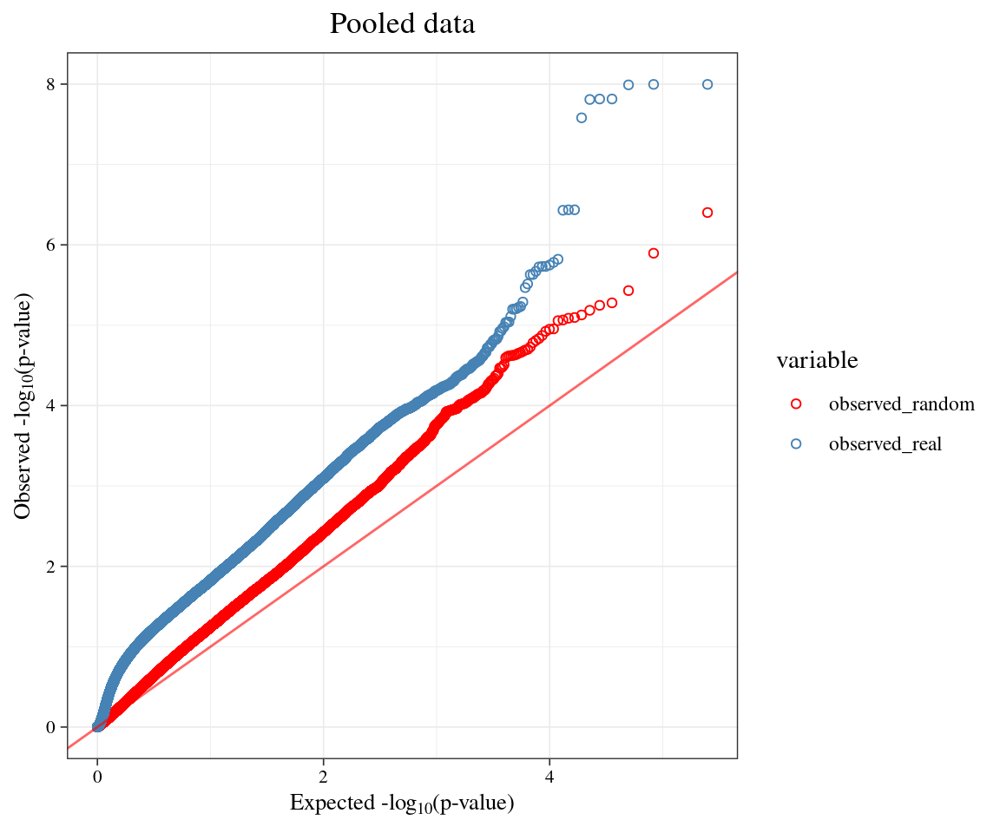
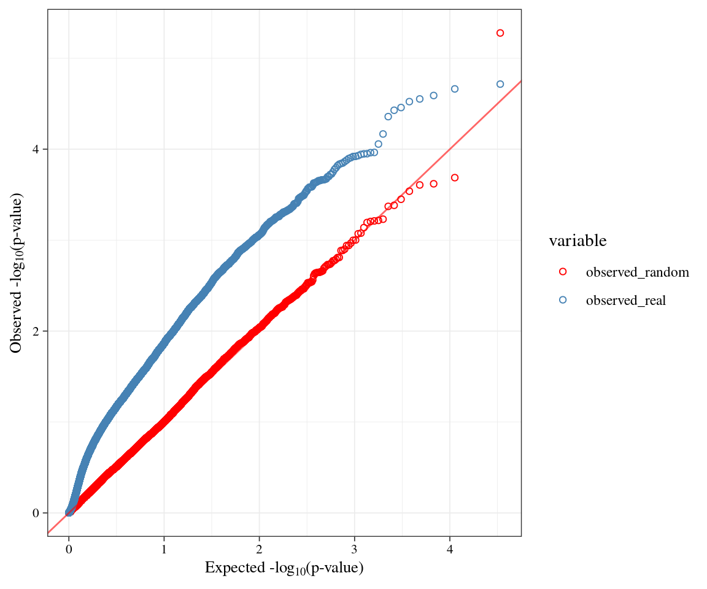

ACAT analysis for random SNPs
XSun
2022-07-26
Last updated: 2022-09-20
Checks: 6 1
Knit directory: factor_analysis/
This reproducible R Markdown analysis was created with workflowr (version 1.7.0). The Checks tab describes the reproducibility checks that were applied when the results were created. The Past versions tab lists the development history.
The R Markdown file has staged changes. To know which version of the
R Markdown file created these results, you’ll want to first commit it to
the Git repo. If you’re still working on the analysis, you can ignore
this warning. When you’re finished, you can run
wflow_publish to commit the R Markdown file and build the
HTML.
Great job! The global environment was empty. Objects defined in the global environment can affect the analysis in your R Markdown file in unknown ways. For reproduciblity it’s best to always run the code in an empty environment.
The command set.seed(20200623) was run prior to running
the code in the R Markdown file. Setting a seed ensures that any results
that rely on randomness, e.g. subsampling or permutations, are
reproducible.
Great job! Recording the operating system, R version, and package versions is critical for reproducibility.
Nice! There were no cached chunks for this analysis, so you can be confident that you successfully produced the results during this run.
Great job! Using relative paths to the files within your workflowr project makes it easier to run your code on other machines.
Great! You are using Git for version control. Tracking code development and connecting the code version to the results is critical for reproducibility.
The results in this page were generated with repository version d52e8ea. See the Past versions tab to see a history of the changes made to the R Markdown and HTML files.
Note that you need to be careful to ensure that all relevant files for
the analysis have been committed to Git prior to generating the results
(you can use wflow_publish or
wflow_git_commit). workflowr only checks the R Markdown
file, but you know if there are other scripts or data files that it
depends on. Below is the status of the Git repository when the results
were generated:
Ignored files:
Ignored: .RData
Ignored: .Rhistory
Ignored: analysis/.Rhistory
Ignored: output/.Rhistory
Staged changes:
Modified: analysis/ACAT_random.Rmd
Note that any generated files, e.g. HTML, png, CSS, etc., are not included in this status report because it is ok for generated content to have uncommitted changes.
These are the previous versions of the repository in which changes were
made to the R Markdown (analysis/ACAT_random.Rmd) and HTML
(docs/ACAT_random.html) files. If you’ve configured a
remote Git repository (see ?wflow_git_remote), click on the
hyperlinks in the table below to view the files as they were in that
past version.
| File | Version | Author | Date | Message |
|---|---|---|---|---|
| Rmd | d52e8ea | XSun | 2022-09-20 | update |
| html | d52e8ea | XSun | 2022-09-20 | update |
| Rmd | d8d055e | XSun | 2022-09-20 | update |
| html | d8d055e | XSun | 2022-09-20 | update |
| Rmd | 627a691 | XSun | 2022-09-02 | update |
| html | 627a691 | XSun | 2022-09-02 | update |
| Rmd | f80ea69 | XSun | 2022-08-29 | update |
| Rmd | b1b827a | XSun | 2022-08-17 | update |
| html | b1b827a | XSun | 2022-08-17 | update |
| Rmd | e4382dd | XSun | 2022-08-08 | update |
| html | e4382dd | XSun | 2022-08-08 | update |
| Rmd | cebf58a | XSun | 2022-07-29 | update |
| html | cebf58a | XSun | 2022-07-29 | update |
| Rmd | 5a499c2 | XSun | 2022-07-29 | update |
| html | 5a499c2 | XSun | 2022-07-29 | update |
| Rmd | 625b2a6 | XSun | 2022-07-29 | update |
| html | 625b2a6 | XSun | 2022-07-29 | update |
Introduction
It was shown that ACAT p-values deviate significantly from null. One concern is that the GWAS SNPs may be somewhat different from other SNPs, so the results may be due to chance. It would be useful to repeat the analysis with random SNPs that match GWAS SNPs for allele frequency and LD.
Random ACAT results
We did the analysis follows:
Find random SNPs that match GWAS SNPs for allele frequency and LD using vSampler
For each SNP, do association test PEER ~ SNP, select the PEER factors do not associate with SNP as covariates. For each expression factor, fo association test factor ~ SNP + SNP-specific covariates.
Aggregate p-values using ACAT.
Make QQ plot for each cell type.
The QQ plots shift to y-axis and show strong signal, which is not expected for random SNPs. This could be due to: (1) Even random SNPs tend to be associated with the expression factors. (2) There is really no such trend, but ACAT gave significant p-values, in other words, the ACAT p-values are not calibrated.
Results checking
Take random SNPs matching a GWAS trait, say asthma, or IBD, or some blood cell traits. We have p-values of these SNPs with all factors. We show the QQ plots of these p-values.
Then we chose a pair of trait-factors that have very strong ACAT signal and made QQ plot the p-values from factor ~ SNP association tests.
For all traits
Several immune diseases and cell type trait can have strong signals (IBD,rbc,asthma, see below) while others not.
EUR.IBD

pair 1 from IBD trait
From B cell dataset, pair: pwy203_pc4 - EUR.IBD, ACAT p-value:2.57244e-57

top snps
index <- which.min(as.numeric(as.character(results_linear$P)))
results_linear[index,] CHR SNP BP A1 TEST NMISS BETA STAT P
43 6 rs9270832 32570228 T ADD 254 -1.874 -22.17 5.044e-59The origin snp:
final_map[index_origin,] rs_or LABEL CHR POS REF ALT MAF inLDvariants_LD1 chrpos
430 rs9271176 query 6 32578127 A G 0.3231 6543 6_32578127
rs_vs LABEL_vs CHR_vs POS_vs REF_vs ALT_vs MAF_vs inLDvariants_LD1_vs
430 rs9270832 control1 6 32570228 T C 0.2744 6544
chrpos_vs
430 6_32570228index_origin <- which(final_map$rs_vs == snp)QQ plot for the real data.
p_acat <- ACAT(as.numeric(as.character(results_linear$P)))
p_acat[1] 0.9894268Pair 2 from IBD trait
From CD14_positive_monocyte, pair: pwy312_pc3 - EUR.IBD, ACAT
p-value:1.604200e-59

top snps
index <- which.min(as.numeric(as.character(results_linear$P)))
results_linear[index,] CHR SNP BP A1 TEST NMISS BETA STAT P
43 6 rs9270832 32570228 T ADD 261 -1.823 -22.69 3.085e-61The origin snp:
final_map[index_origin,] rs_or LABEL CHR POS REF ALT MAF inLDvariants_LD1 chrpos
430 rs9271176 query 6 32578127 A G 0.3231 6543 6_32578127
rs_vs LABEL_vs CHR_vs POS_vs REF_vs ALT_vs MAF_vs inLDvariants_LD1_vs
430 rs9270832 control1 6 32570228 T C 0.2744 6544
chrpos_vs
430 6_32570228QQ plot for the real data.

p_acat <- ACAT(as.numeric(as.character(results_linear$P)))
p_acat[1] 0.3482019rbc

Pair 1 from rbc
From T cell (CD8+) dataset, pair: pwy311_pc5 - rbc, ACAT
p-value:2.637203e-11

top snps
index1 <- which.min(as.numeric(as.character(results_linear$P)))
results_linear[index1,] CHR SNP BP A1 TEST NMISS BETA STAT P
138 6 rs2647083 32679722 G ADD 286 0.7466 7.788 1.579e-13index2 <- which(as.numeric(as.character(results_linear$P)) == sort(as.numeric(as.character(results_linear$P)))[2])
results_linear[index2,] CHR SNP BP A1 TEST NMISS BETA STAT P
137 6 rs17423698 32358368 C ADD 286 -0.7387 -4.954 1.31e-06The origin snp:
final_map[index_origin1,] rs_or LABEL CHR POS REF ALT MAF inLDvariants_LD1 chrpos
1475 rs17884428 query 6 31238759 C T 0.3807 3078 6_31238759
rs_vs LABEL_vs CHR_vs POS_vs REF_vs ALT_vs MAF_vs
1475 rs2647083 control2 6 32679722 C G 0.3459
inLDvariants_LD1_vs chrpos_vs
1475 3083 6_32679722final_map[index_origin2,] rs_or LABEL CHR POS REF ALT MAF inLDvariants_LD1 chrpos
1497 rs1136917 query 6 29912281 G A 0.1133 866 6_29912281
rs_vs LABEL_vs CHR_vs POS_vs REF_vs ALT_vs MAF_vs
1497 rs17423698 control1 6 32358368 T C 0.159
inLDvariants_LD1_vs chrpos_vs
1497 888 6_32358368These two origin variants have LD R2 < 0.1 and physical distance > 1Mb
QQ plot for the real data.

p_acat <- ACAT(as.numeric(as.character(results_linear$P)))
p_acat[1] 0.05769225Allergy
Pair 1 from allergy
From B cell dataset, pair: pwy236_pc4 - rbc, ACAT p-value:2.1553e-17

top snps
index1 <- which.min(as.numeric(as.character(results_linear$P)))
results_linear[index1,] CHR SNP BP A1 TEST NMISS BETA STAT P
60 6 rs9271667 32592710 C ADD 254 -1.217 -9.826 3.079e-19index2 <- which(as.numeric(as.character(results_linear$P)) == sort(as.numeric(as.character(results_linear$P)))[2])
results_linear[index2,] CHR SNP BP A1 TEST NMISS BETA STAT P
59 6 rs28895129 32420952 G ADD 254 0.8147 4.007 8.307e-05The origin snp:
final_map[index_origin1,] rs_or LABEL CHR POS REF ALT MAF inLDvariants_LD1 chrpos
705 rs17211510 query 6 32602430 C A 0.2644 4540 6_32602430
rs_vs LABEL_vs CHR_vs POS_vs REF_vs ALT_vs MAF_vs inLDvariants_LD1_vs
705 rs9271667 control1 6 32592710 T C 0.3121 4534
chrpos_vs
705 6_32592710final_map[index_origin2,] rs_or LABEL CHR POS REF ALT MAF inLDvariants_LD1 chrpos
694 rs2854001 query 6 31323012 G A 0.2117 1303 6_31323012
rs_vs LABEL_vs CHR_vs POS_vs REF_vs ALT_vs MAF_vs
694 rs28895129 control1 6 32420952 A G 0.166
inLDvariants_LD1_vs chrpos_vs
694 1288 6_32420952These two origin variants have LD R2 < 0.1 and physical distance > 1Mb
QQ plot for the real data.

p_acat <- ACAT(as.numeric(as.character(results_linear$P)))
p_acat[1] 0.8346754Comparing ACAT for real data and random data – MHC removed
We found that the variants in MHC area may lead to the deviation in random ACAT. So we removed the SNPs in MHC area and re-plot the qq plots.
We pooled all cell types to check if the inflations from random data (Leukocyte (CD15+), Platelet, T cell (CD8+)) dominant the whole data set.

We noticed that there is some inflations for random data (Leukocyte (CD15+), Platelet, T cell (CD8+)). We compute genomic inflation factors for all cell types.
\[ chisq = qchisq(1-pvalue,1)\] \[ lambda = \frac{median(chisq)}{qchisq(0.5,1)} \] The lambda are 1.103569 1.110509 1.133734 1.179766 1.045502 4.582142 accordingly.
Then we corrected the p-values with the inflation factor – lambda (devide the chi-squares by inflation factors accoring to https://www.ncbi.nlm.nih.gov/pmc/articles/PMC3133943/ and compute the p-values):
\[ chisq_{adjusted} = \frac{chisq}{lambda}\]
\[ pvalue_{adjusted} = 1 - pchisq(chisq_{adjusted}) \]
The adjusted p-values are shown in the qqplots below (comparing unadjusted real p-values).
Top pairs from T cell CD8+
Random ACAT
We check several top pairs (top20) that have lowest p-values.
pdw_pwy288_pc4 ret_pwy158_pc1 pdw_pwy291_pc1 pdw_pwy102_pc3
1.271423e-06 3.710175e-06 6.523194e-06 7.455455e-06
pdw_pwy289_pc5 pdw_pwy228_pc5 pdw_pwy129_pc4 pdw_pwy165_pc3
8.618332e-06 8.774918e-06 1.122459e-05 1.191599e-05
pdw_pwy202_pc3 pdw_pwy303_pc1 pdw_pwy86_pc4 EUR.CD_pwy259_pc4
1.341401e-05 1.463348e-05 1.549829e-05 1.652491e-05
lymph_pwy284_pc3 lymph_pwy300_pc1 pdw_pwy292_pc1 EUR.CD_pwy131_pc1
1.868668e-05 2.309532e-05 2.353322e-05 2.389009e-05
pdw_pwy137_pc5 EUR.CD_pwy299_pc1 plt_pwy155_pc3 hgb_pwy216_pc2
2.541057e-05 3.095121e-05 3.980136e-05 4.210378e-05 traits
EUR.CD hgb lymph pdw plt ret
3 1 2 12 1 1 12 of 20 are related to trait pdw (platelet distribution width).
Real ACAT
For comparison, we also checked the top 20 pairs from real data
lymph_pwy212_pc3 mono_pwy284_pc2 wbc_pwy284_pc2 hct_pwy141_pc3
3.407572e-06 5.849411e-06 5.991581e-06 1.092830e-05
hgb_pwy168_pc4 mono_pwy293_pc3 wbc_pwy293_pc3 rbc_pwy141_pc3
1.369486e-05 1.475678e-05 1.512792e-05 1.699808e-05
hct_pwy256_pc2 rbc_pwy256_pc2 hct_pwy154_pc1 EUR.CD_pwy217_pc5
1.727633e-05 2.688218e-05 3.243143e-05 4.113453e-05
hct_pwy16_pc2 pct_pwy322_pc2 hct_pwy167_pc1 hct_pwy139_pc1
4.189620e-05 4.462366e-05 4.656165e-05 4.818949e-05
rbc_pwy154_pc1 hct_pwy210_pc1 mono_pwy125_pc4 hct_pwy273_pc1
5.043930e-05 5.106646e-05 5.317304e-05 5.520883e-05 traits_real
EUR.CD hct hgb lymph mono pct rbc wbc
1 8 1 1 3 1 3 2 The top pairs are not related to pdw.
We removed the pairs related to pdw for both real data and random data, then made the qq-plot:
| Version | Author | Date |
|---|---|---|
| d8d055e | XSun | 2022-09-20 |
[1] "The top1 pair of random data (top 1 dot in red) is ret_pwy158_pc1 "[1] "p-value = 3.71017525187992e-06 "[1] "The top1 pair of real data (top 1 dot in blue) is lymph_pwy212_pc3 "[1] "p-value = 3.40757177707754e-06 "Top pairs from Leukocyte (CD15+)
Random ACAT
We also check the top 20 pairs from Leukocyte (CD15+).
wbc_pwy151_pc1 gran_pwy271_pc1 neut_pwy271_pc1 hct_pwy163_pc3 gran_pwy185_pc5
5.269953e-06 8.021516e-06 8.191818e-06 1.999401e-05 2.186851e-05
neut_pwy185_pc5 hct_pwy290_pc4 gran_pwy93_pc3 neut_pwy93_pc3 hct_pwy269_pc1
2.233374e-05 2.380974e-05 2.406965e-05 2.457972e-05 3.407876e-05
gran_pwy56_pc3 neut_pwy56_pc3 hct_pwy116_pc4 hct_pwy314_pc4 hct_pwy151_pc5
4.757533e-05 4.859534e-05 5.407810e-05 7.126153e-05 7.663900e-05
gran_pwy256_pc4 neut_pwy256_pc4 gran_pwy230_pc5 neut_pwy230_pc5 hct_pwy224_pc1
8.034297e-05 8.206683e-05 9.064552e-05 9.266286e-05 1.046540e-04 traits
gran hct neut wbc
6 7 6 1 pwy
pwy116 pwy151 pwy163 pwy185 pwy224 pwy230 pwy256 pwy269 pwy271 pwy290 pwy314
1 2 1 2 1 2 2 1 2 1 1
pwy56 pwy93
2 2 There is not a dominant pathway or trait.
Real ACAT
For comparison, we also checked the top 20 pairs from real data
lymph_pwy212_pc3 mono_pwy284_pc2 wbc_pwy284_pc2 hct_pwy141_pc3
3.407572e-06 5.849411e-06 5.991581e-06 1.092830e-05
hgb_pwy168_pc4 mono_pwy293_pc3 wbc_pwy293_pc3 rbc_pwy141_pc3
1.369486e-05 1.475678e-05 1.512792e-05 1.699808e-05
hct_pwy256_pc2 rbc_pwy256_pc2 hct_pwy154_pc1 EUR.CD_pwy217_pc5
1.727633e-05 2.688218e-05 3.243143e-05 4.113453e-05
hct_pwy16_pc2 pct_pwy322_pc2 hct_pwy167_pc1 hct_pwy139_pc1
4.189620e-05 4.462366e-05 4.656165e-05 4.818949e-05
rbc_pwy154_pc1 hct_pwy210_pc1 mono_pwy125_pc4 hct_pwy273_pc1
5.043930e-05 5.106646e-05 5.317304e-05 5.520883e-05 traits_real
EUR.CD hct hgb lymph mono pct rbc wbc
1 8 1 1 3 1 3 2 There are three dominant traits in random data (gran, hct and neut), hct is also the dominant trait in real data. So we removed gran and neut in both random data and real data.
| Version | Author | Date |
|---|---|---|
| d8d055e | XSun | 2022-09-20 |
[1] "The top3 pairs of random data (top 3 dot in red) is wbc_pwy151_pc1,hct_pwy163_pc3,hct_pwy290_pc4 "[1] "p-value = 5.26995343553681e-06,1.99940063134465e-05,2.38097448835839e-05 "[1] "The top3 pairs of real data (top 1 dot in blue) is hgb_pwy280_pc3,lymph_pwy18_pc4,rdw_pwy210_pc3 "[1] "p-value = 1.924151714091e-05,2.1727275875024e-05,2.56802806524958e-05 "If we remove the hct as well, we have:

| Version | Author | Date |
|---|---|---|
| d8d055e | XSun | 2022-09-20 |
[1] "The top1 pair of random data (top 1 dot in red) is wbc_pwy151_pc1 "[1] "p-value = 5.26995343553681e-06 "[1] "The top1 pair of real data (top 1 dot in blue) is hgb_pwy280_pc3 "[1] "p-value = 1.924151714091e-05 "Checking the top 20 pairs for all cell types
Random ACAT:
[1] "The traits included in top pairs, B cell (CD19+) "
traits
EUR.UC hct hgb mcv mpv
1 2 2 2 1
myeloid_wbc neut pct pdw rdw
1 1 3 2 3
ret ukb.allasthma
1 1
[1] "The pathways included in top pairs, B cell (CD19+) "
pwy
pwy114 pwy122 pwy123 pwy124 pwy125 pwy137 pwy162 pwy163 pwy177 pwy186 pwy202
2 1 1 1 1 1 1 1 1 1 1
pwy259 pwy268 pwy271 pwy276 pwy284 pwy298 pwy318 pwy89
1 1 1 1 1 1 1 1
[1] "The traits included in top pairs, Monocyte (CD14+) "
traits
EUR.IBD baso hct mchc mono
1 1 2 1 1
neut plt rbc rdw ret
1 9 1 1 1
ukb.allasthma
1
[1] "The pathways included in top pairs, Monocyte (CD14+) "
pwy
pwy116 pwy118 pwy119 pwy121 pwy122 pwy150 pwy161 pwy173 pwy174 pwy187 pwy236
2 1 1 2 1 1 1 2 1 1 1
pwy286 pwy287 pwy290 pwy304 pwy54
1 1 1 2 1
[1] "The traits included in top pairs, Leukocyte (CD15+) "
traits
gran hct neut wbc
6 7 6 1
[1] "The pathways included in top pairs, Leukocyte (CD15+) "
pwy
pwy116 pwy151 pwy163 pwy185 pwy224 pwy230 pwy256 pwy269 pwy271 pwy290 pwy314
1 2 1 2 1 2 2 1 2 1 1
pwy56 pwy93
2 2
[1] "The traits included in top pairs, Platelet "
traits
baso eo hct lymph mcv
8 1 2 1 1
myeloid_wbc pdw plt ukb.allasthma
1 1 4 1
[1] "The pathways included in top pairs, Platelet "
pwy
pwy116 pwy127 pwy136 pwy150 pwy158 pwy159 pwy177 pwy181 pwy192 pwy200 pwy235
1 1 1 1 1 1 3 1 2 1 1
pwy275 pwy294 pwy301 pwy315 pwy316 pwy91
1 1 1 1 1 1
[1] "The traits included in top pairs, T cell (CD4+) "
traits
EUR.UC T1D gran hgb mchc mono mpv neut pct ret
2 1 1 1 1 1 1 1 1 10
[1] "The pathways included in top pairs, T cell (CD4+) "
pwy
pwy1 pwy117 pwy124 pwy131 pwy135 pwy145 pwy151 pwy195 pwy217 pwy222 pwy283
1 1 1 1 1 1 1 2 1 1 2
pwy289 pwy292 pwy305 pwy86 pwy94 pwy96
1 1 2 1 1 1
[1] "The traits included in top pairs, T cell (CD8+) "
traits
EUR.CD hgb lymph pdw plt ret
3 1 2 12 1 1
[1] "The pathways included in top pairs, T cell (CD8+) "
pwy
pwy102 pwy129 pwy131 pwy137 pwy155 pwy158 pwy165 pwy202 pwy216 pwy228 pwy259
1 1 1 1 1 1 1 1 1 1 1
pwy284 pwy288 pwy289 pwy291 pwy292 pwy299 pwy300 pwy303 pwy86
1 1 1 1 1 1 1 1 1 Real ACAT
[1] "The traits included in top pairs, B cell (CD19+) "
traits
baso eo hct hgb mchc pct plt rbc rdw ret
1 2 3 2 3 1 1 2 3 2
[1] "The pathways included in top pairs, B cell (CD19+) "
pwy
pwy120 pwy150 pwy155 pwy191 pwy266 pwy298 pwy299 pwy300 pwy315 pwy89
3 1 2 1 3 3 1 1 4 1
[1] "The traits included in top pairs, Monocyte (CD14+) "
traits
EUR.CD gran mch myeloid_wbc neut wbc
3 5 1 5 5 1
[1] "The pathways included in top pairs, Monocyte (CD14+) "
pwy
pwy126 pwy142 pwy143 pwy145 pwy171 pwy230 pwy236 pwy273 pwy299
1 1 3 4 1 3 1 3 3
[1] "The traits included in top pairs, Leukocyte (CD15+) "
traits
EUR.IBD EUR.UC allergy baso eo hct hgb lymph mch mchc
1 2 1 1 3 1 1 1 1 2
mcv mono pdw rdw ret
1 1 1 2 1
[1] "The pathways included in top pairs, Leukocyte (CD15+) "
pwy
pwy129 pwy145 pwy16 pwy18 pwy192 pwy205 pwy210 pwy234 pwy255 pwy269 pwy276
1 1 1 1 1 1 3 1 1 1 2
pwy280 pwy282 pwy291 pwy296 pwy314
1 1 1 1 2
[1] "The traits included in top pairs, Platelet "
traits
eo lymph mch mcv mpv pct pdw plt rbc ret
1 1 3 2 1 1 1 1 1 8
[1] "The pathways included in top pairs, Platelet "
pwy
pwy1 pwy106 pwy181 pwy202 pwy211 pwy234 pwy271 pwy279 pwy295 pwy301 pwy302
6 1 1 1 1 1 1 1 1 3 2
pwy96
1
[1] "The traits included in top pairs, T cell (CD4+) "
traits
EUR.CD EUR.IBD EUR.UC baso gran
2 1 1 1 2
hgb mchc mcv myeloid_wbc neut
1 1 1 1 3
pdw rdw ukb.allasthma wbc
2 1 2 1
[1] "The pathways included in top pairs, T cell (CD4+) "
pwy
pwy139 pwy155 pwy163 pwy210 pwy216 pwy224 pwy276 pwy283 pwy302 pwy305 pwy310
1 1 1 4 1 1 1 1 3 1 1
pwy313 pwy86 pwy94
1 1 2
[1] "The traits included in top pairs, T cell (CD8+) "
traits
EUR.CD hct hgb lymph mono pct rbc wbc
1 8 1 1 3 1 3 2
[1] "The pathways included in top pairs, T cell (CD8+) "
pwy
pwy125 pwy139 pwy141 pwy154 pwy16 pwy167 pwy168 pwy210 pwy212 pwy217 pwy256
1 1 2 2 1 1 1 1 1 1 2
pwy273 pwy284 pwy293 pwy322
1 2 2 1
sessionInfo()R version 4.2.0 (2022-04-22)
Platform: x86_64-pc-linux-gnu (64-bit)
Running under: CentOS Linux 7 (Core)
Matrix products: default
BLAS/LAPACK: /software/openblas-0.3.13-el7-x86_64/lib/libopenblas_haswellp-r0.3.13.so
locale:
[1] C
attached base packages:
[1] stats graphics grDevices utils datasets methods base
other attached packages:
[1] data.table_1.14.2 ACAT_0.91 gridExtra_2.3 ggplot2_3.3.5
loaded via a namespace (and not attached):
[1] tidyselect_1.1.2 xfun_0.30 bslib_0.3.1 reshape2_1.4.4
[5] purrr_0.3.4 colorspace_2.0-3 vctrs_0.4.1 generics_0.1.2
[9] htmltools_0.5.2 yaml_2.3.5 utf8_1.2.2 rlang_1.0.5
[13] jquerylib_0.1.4 later_1.3.0 pillar_1.7.0 glue_1.6.2
[17] withr_2.5.0 DBI_1.1.2 plyr_1.8.7 lifecycle_1.0.1
[21] stringr_1.4.0 munsell_0.5.0 gtable_0.3.0 workflowr_1.7.0
[25] htmlwidgets_1.5.4 evaluate_0.15 labeling_0.4.2 knitr_1.39
[29] fastmap_1.1.0 crosstalk_1.2.0 httpuv_1.6.5 fansi_1.0.3
[33] highr_0.9 Rcpp_1.0.8.3 DT_0.22 promises_1.2.0.1
[37] scales_1.2.0 jsonlite_1.8.0 farver_2.1.0 fs_1.5.2
[41] digest_0.6.29 stringi_1.7.6 dplyr_1.0.9 grid_4.2.0
[45] rprojroot_2.0.3 cli_3.3.0 tools_4.2.0 magrittr_2.0.3
[49] sass_0.4.1 tibble_3.1.7 crayon_1.5.1 whisker_0.4
[53] pkgconfig_2.0.3 ellipsis_0.3.2 assertthat_0.2.1 rmarkdown_2.14
[57] rstudioapi_0.13 R6_2.5.1 git2r_0.30.1 compiler_4.2.0